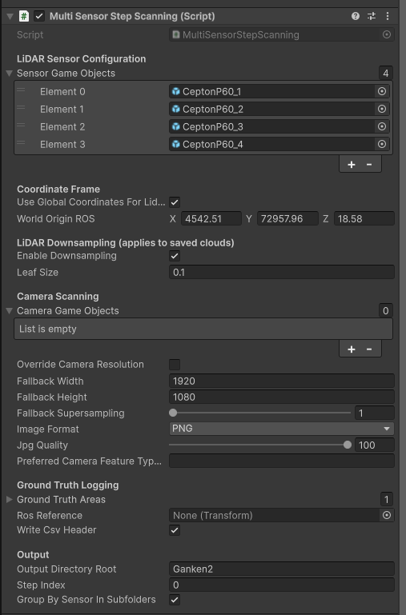

MultiSensor Step Scanning (LiDAR + Camera)
Namespace: AWSIM.Scanning
Script: MultiSensorStepScanning.cs
A unified, step-based scanning system for LiDAR and camera sensors in Unity.
Designed for AWSIM / RGLUnityPlugin, this tool enables synchronized LiDAR and camera captures on a per-step basis, useful for dataset generation, ground-truth logging, or robotic simulation. The most important aspect of this component is ensuring that all elements are captured simultaneously, preventing any blurring or misalignment in the camera image.
🧭 Overview
MultiSensorStepScanning coordinates LiDAR and camera captures frame-by-frame, ensuring precise, motion-free outputs.
Each “step” freezes the Unity simulation (Time.timeScale = 0), triggers all sensors, and saves outputs before resuming time.
The script also supports ground truth logging of detected objects via configured GroundTruthArea components.
Key Features
- LiDAR Scanning
- Builds RGL subgraphs per LiDAR sensor.
- Supports local ROS axes or global ROS world transformations.
- Optional voxel downsampling for
.pcdoutput files. -
Saves results under
Assets/{outputDirectoryRoot}/Lidar. -
Camera Scanning
- Captures one image per configured camera each step.
- Supports existing custom capture components or built-in fallback capture.
- Configurable resolution, supersampling, and image format (
.png/.jpg). -
Saves images under
Assets/{outputDirectoryRoot}/Camera. -
Ground Truth CSV Logging
- Aggregates visible objects from assigned
GroundTruthAreavolumes. - Logs object name, UUID, ROS-space position, yaw, and step index.
-
CSV outputs saved under
Assets/{outputDirectoryRoot}/GroundTruthPos. -
Triggering
- Manually via Space key.
- Or programmatically via
TriggerAndSaveStep()/ coroutine variant.
⚙️ How to Use
1. Add the Script
Attach MultiSensorStepScanning to an empty GameObject in your Unity scene.
2. Configure Sensors
In the Inspector panel:
LiDAR
- Assign all GameObjects containing
LidarSensorcomponents. - Choose coordinate frame mode:
- Local (default, ROS axes)
- Global (transforms using
worldOriginROS) - Enable/disable downsampling and adjust leaf size.
Camera
- Assign all GameObjects with
Cameracomponents. - Optionally define:
- Override resolution and supersampling.
- Image format (PNG/JPG) and quality.
- Custom capture component name (e.g.,
"MyCustomCameraFeature").
Ground Truth (optional)
- Add one or more
GroundTruthAreavolumes. - Optionally specify a
rosReferencetransform to define relative frame. - Enable CSV header writing if desired.
Output
- Choose root folder name under
Assets/. - Enable or disable per-sensor subfolders.
- The step index will auto-increment after each capture.

⌨️ Triggering a Step
Manual: Press Space in Play Mode.
Programmatic:
var scanner = FindObjectOfType<MultiSensorStepScanning>();
scanner.TriggerAndSaveStep();